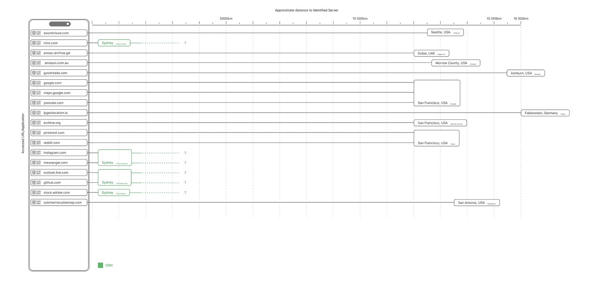

I learnt a lot during the research phase of this experiment, where servers are, who controls them, how much information is publicly available, how these things work (not fully though, god it's complicated).
However, the visualisation part of the experiment was not so fruitful, I found it quite difficult to even get to an idea of how it should look, drawing out ideas on paper but not feeling like they really helped to show whether they work or not. When I gave up and just decided to make something, to experiment, I made the wrong thing. I know this is a step that must be taken to make the right thing, but it still feels kind of bad when you look at it and know it is the wrong thing. So I stopped working on that and tried a different approach, which was definitely a step in the right direction, but the visualisation of information is still a challenge for me.